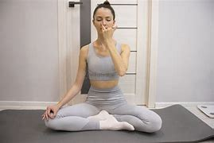
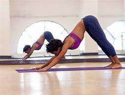
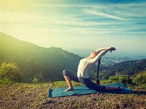

Yoga includes a variety of physical postures known as asanas, which are designed to improve
flexibility, strength, and balance. Each asana targets different muscle groups and can help
alleviate physical ailments while promoting overall well-being.
Pranayama refers to the practice of breath control, which is essential in yoga. It involves
various techniques to regulate breathing patterns, enhancing oxygen flow to the body and
calming the mind. This practice is crucial for preparing the body for meditation and improving mental focus.

Meditation is a core component of yoga, aimed at achieving mental clarity and emotional
stability. Through meditation, practitioners learn to focus their minds, reduce stress,
and cultivate a sense of inner peace. Mindfulness practices in yoga encourage awareness of the present moment, fostering a deeper connection wi

Yoga is grounded in ethical guidelines known as Yamas (moral codes) and Niyamas (personal
observances). These principles guide practitioners in their interactions with others and
themselves, promoting values such as non-violence, truthfulness, self-discipline, andbr

self-discovery and personal growth, helping individuals connect with their inner selves
and the universe.
Yoga Basics +1
There are various styles of yoga, each with its unique focus and methodology. Some popular
styles include Hatha Yoga (focusing on physical postures), Vinyasa (flowing sequences),
Ashtanga (a rigorous style with a set sequence), and Kundalini (emphasizing energy awakening). Each style caters to different preferences and goals, allowing practitioners to choose what resonates with them. Yoga Basics
+1
Regular yoga practice is associated with numerous health benefits, including improved
flexibility, strength, posture, and balance. It can also reduce stress, anxiety, and
depression, enhance mental clarity, and promote overall physical health. Many
practitioners report increased energy levels and a greater sense of well-being as
a result of their yoga practice.
